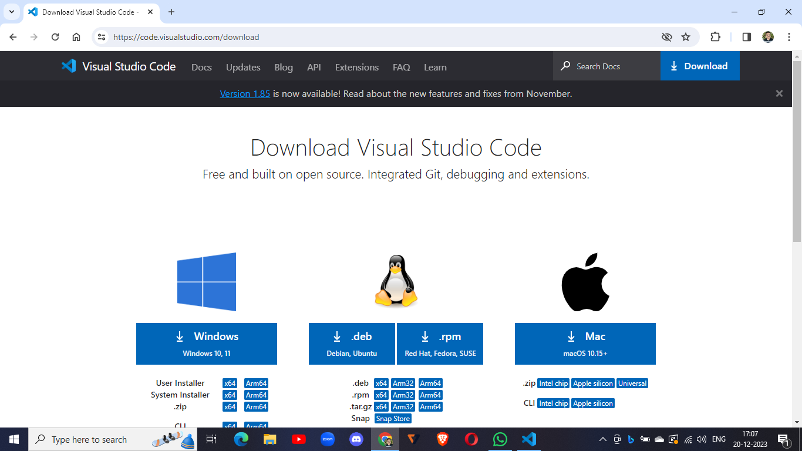
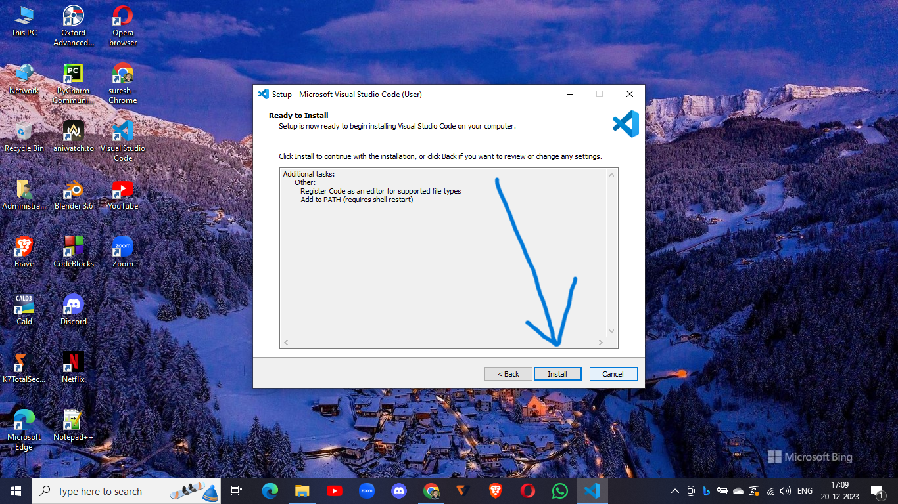
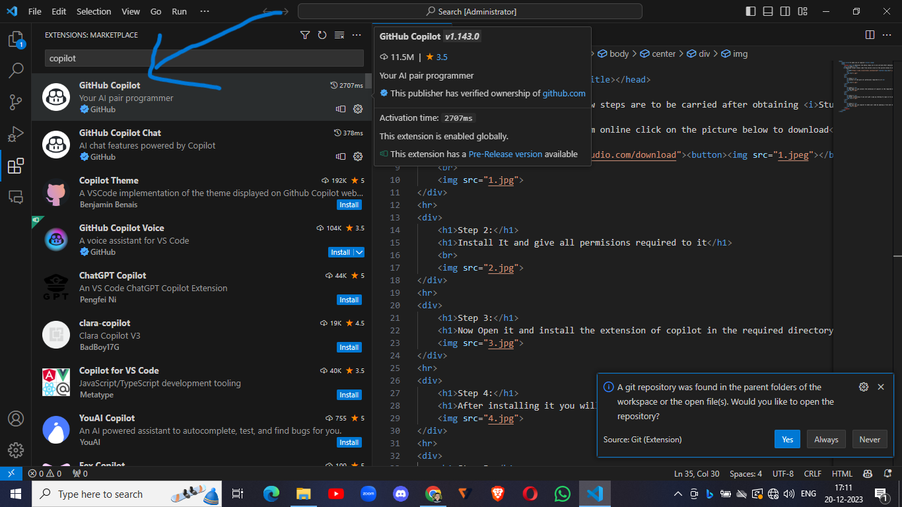
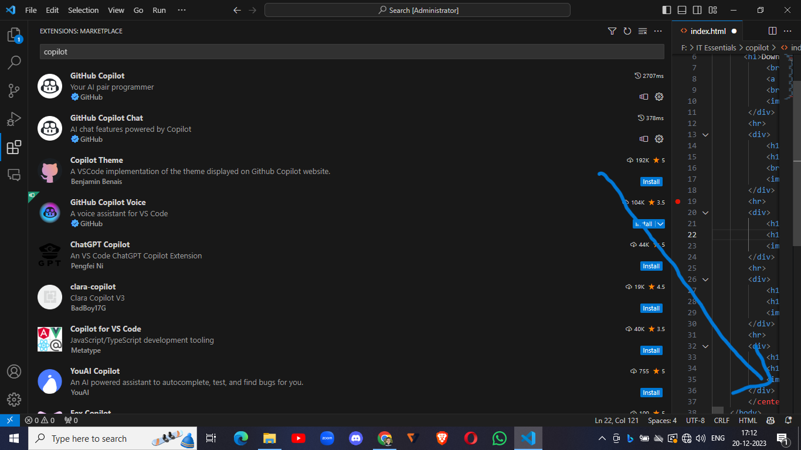

Note: All the below steps are to be carried out after obtaining the Student Developer Pack and getting Approved
Step 1:
Download Visual Studio Code from the official website:

Step 2:
Install Visual Studio Code and grant all required permissions.

Step 3:
Open Visual Studio Code and install the Copilot extension in the required directory.

Step 4:
After installing, sign in to your GitHub account to access Copilot. You will receive a notification in the top right corner.

Step 5:
Now you can use Copilot by opening a file, right-clicking on the code, selecting Copilot, and then choosing "Start Inline Chat". You can also use the shortcut Ctrl+I.